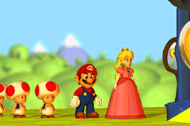

Mario Pinball Land (USA) (Kiosk, GameCube)
EEPROM 4K
Cartridge Identity
- Game Code
BMVE(FamilyBMV)- Header Title
MARIO BALL- Maker / Revision
01/ rev0- ROM Size
- 8.0 MiB (8,388,608 B)
- Save Media
EEPROM 4K- SHA-256
27a7c3302ab8c13c28b3dfa70a8b7873feaa4c6982d646714139b0fe963b898c
Screenshots


Observed Battery Save Layout
- Fill Byte & Active Size
0x00fill · 455–455 / 512 B active (entropy 1.76 bits/B)- Active Offset Ranges
0x0–0x7,0xB,0xD–0x13,0x15–0x17,0x1B,0x1D–0x1E,0x20–0x23,0x25–0x27, +8 more (29 total)- ASCII Magic / Headers
MoMP- Observed Variable Regions
- 0 bytes across 0 spans: None
- Candidate Checksum/Counter Spans
- None
Hardware MMIO Subsystems
ppu_display0x8012590,0x8015e34,0x802c960
Regional Variants & Revisions (Family BMV)
- Mario Pinball Land (USA) (Virtual Console) (
BMVE, 8 MiB) - Mario Pinball Land (USA, Australia) (
BMVE, 8 MiB) - Super Mario Ball (Europe) (
BMVP, 8 MiB) - Super Mario Ball (Europe) (Virtual Console) (
BMVP, 8 MiB) - Super Mario Ball (Japan) (
BMVJ, 8 MiB) - Super Mario Ball (Japan) (Demo) (Kiosk, GameCube) (
BMVE, 8 MiB) - Super Mario Ball (Japan) (Virtual Console) (
BMVJ, 8 MiB)